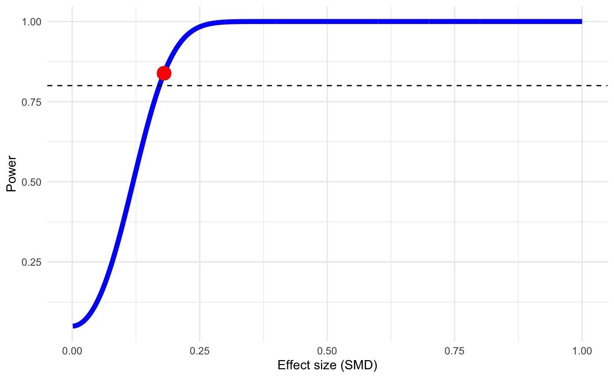
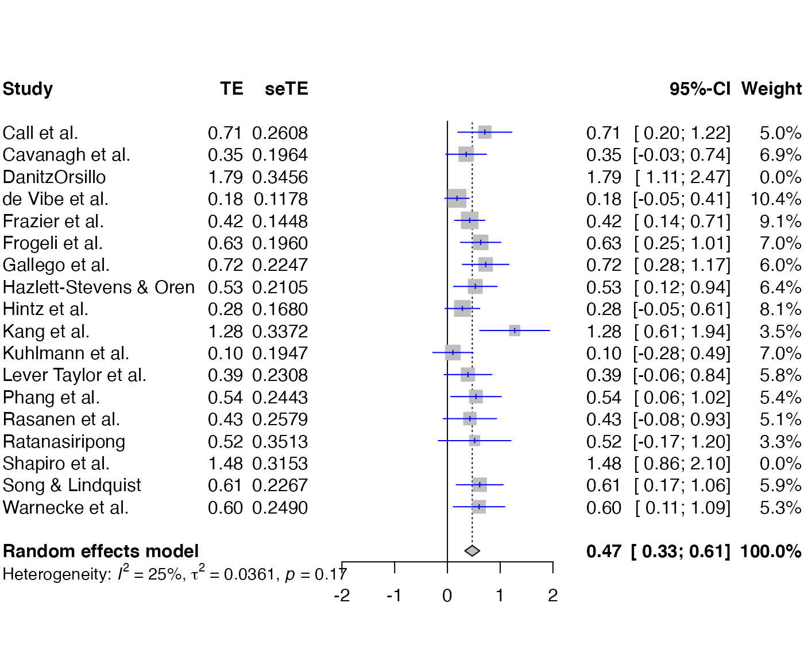
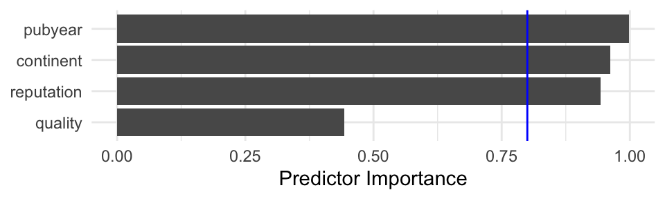
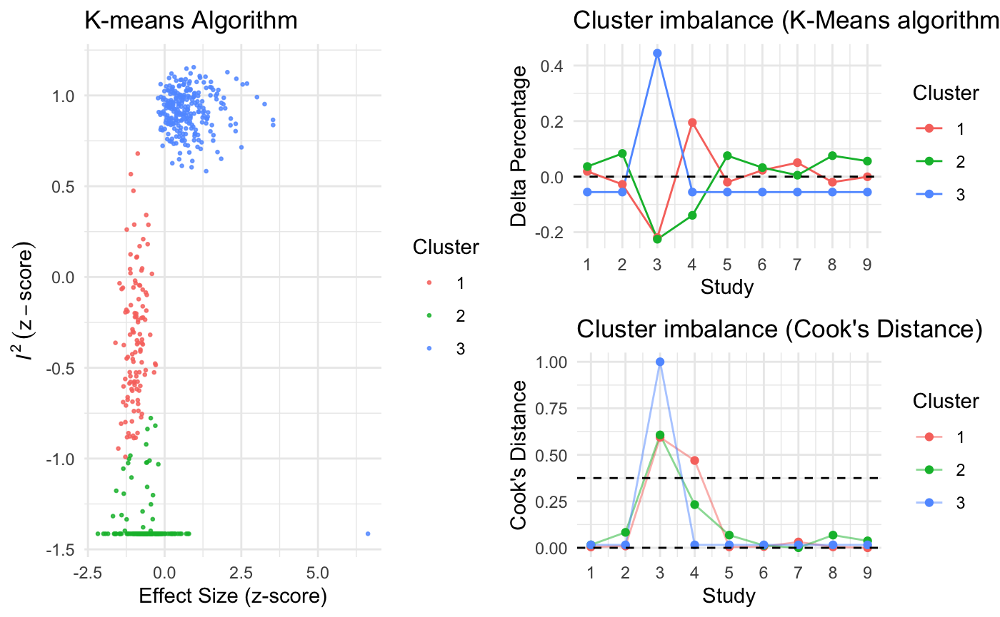
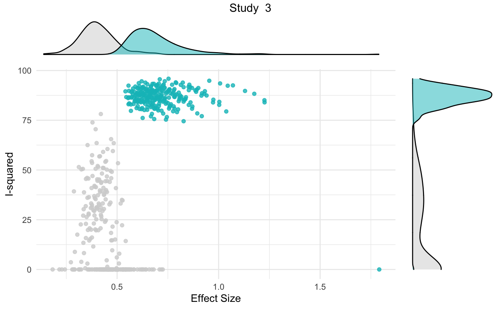
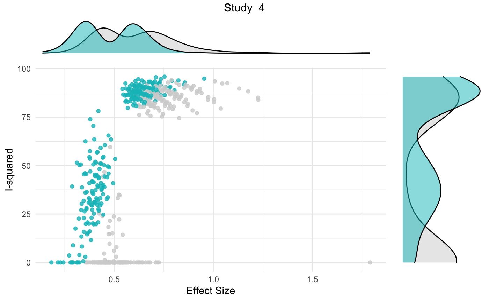
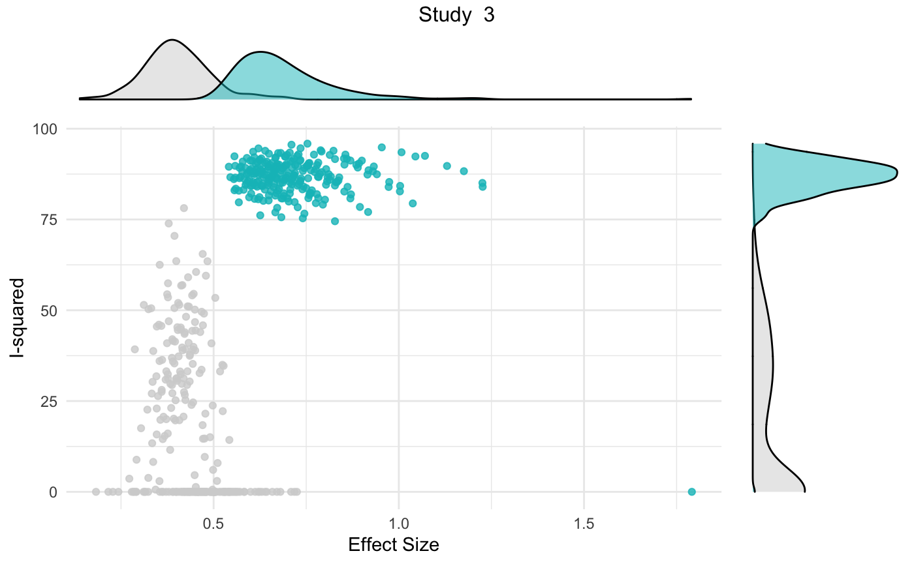
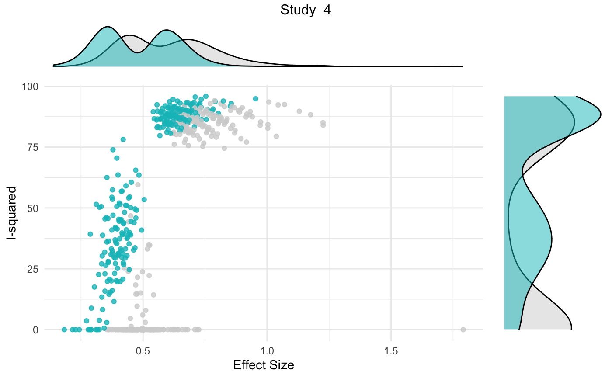
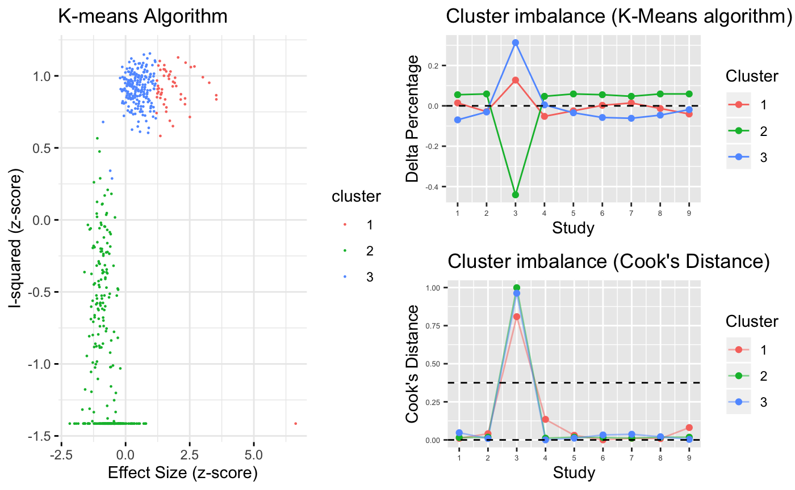

Get Started
dmetar.Rmd
About dmetar
The dmetar package serves as the companion R
package for the online guide Doing
Meta-Analysis in R - A Hands-on Guide written by Mathias
Harrer, Pim Cuijpers, Toshi Furukawa and David Ebert. This freely
available guide shows how to perform meta-analyses in R from
scratch with no prior R knowledge required. The guide, as well
as the dmetar package, have a focus on biomedical and
psychological research synthesis, but methods are applicable to other
research fields too. The guide primarily focuses on two widely used
packages for meta-analysis, meta (Schwarzer, 2007) and
metafor (Viechtbauer, 2010), and how they can be applied in
real-world use cases. The dmetar package thus aims to
provide additional tools and functionalities for researchers conducting
meta-analyses using these packages and the Doing Meta-Analysis in R
guide.
In this vignette, we provide a rough overview of the core
functionalities of the package. An in-depth introduction into the
package and how its functions can be applied to “real-world”
meta-analyses can be found in the online version of the guide. To get
detailed documentation of specific functions, you can consult the
dmetar reference
page.
Currently, the dmetar package is still under development
(version 0.0.9000). This means that, despite intense testing, we cannot
guarantee that functions will work as intended under all circumstances
and for all environments used. To report a bug, or ask a question,
please contact Mathias (mathias.harrer@fau.de) or David (d.d.ebert@vu.nl)
Installation
Given that dmetar is currently under development, the
package is only available from GitHub
right now. To install the development version, you can use the
install_github function from the devtools
package. Given that the package already passes the
R CMD Check, we aim to submit the package to CRAN
in the near future after the development process has been completed.
Use the code below to install the package:
if (!require("devtools")) {
install.packages("devtools")
}
devtools::install_github("MathiasHarrer/dmetar")The package can then be loaded as usual using the
library() function.
Installation Errors
The dmetar package requires that R Version
3.6.3 or greater is installed and used in RStudio. You can check your
current R version by running:
R.Version()$version.stringIf you have an R version below 3.6.3 installed, installing
dmetar will likely cause an error (e.g, because the
dependency metafor was not found). This means that you have
to update R. A tutorial on how to update R on your
system can be found here.
Functionality
The dmetar package provides tools for different stages
of the meta-analysis process. Functions cover topics such as power
analysis, effect size calculation, small-study effects, publication
bias, meta-regression, subgroup analysis, risk of bias assessment, and
network meta-analyses. Many dmetar functions heavily
interact with functions from the meta and
metafor package to improve the work flow when conducting
meta-analysis. Therefore, the meta and metafor
package should be loaded from the library first.
Datasets
To show some of the core functionality of the dmetar
package, we will use three datasets which come shipped with the package
itself: ThirdWave, MVRegressionData and
NetDataNetmeta.
Power Analysis
The dmetar package contains two functions for a
priori power
analyses of a meta-analysis: power.analysis
and power.analysis.subgroups.
Let us assume that researchers expect to have approximately 18 studies
in their meta-analysis, with moderate between-group heterogeneity and
about 50 participants per arm and study. Will there be sufficient power
to detect an assumed minimally important difference of \(d=0.18\)? The power.analysis
function can be used to answer this question.
power.analysis(d = 0.18, k = 18, n1 = 50, n2 = 50, heterogeneity = "moderate")## Random-effects model used (moderate heterogeneity assumed).
## Power: 83.86%Effect Size Calculation
The dmetar package includes several functions to
calculate effect sizes needed for meta-analyses: NNT,
se.from.p
and pool.groups.
Using the NNT function, we can calculate the number
needed to treat \(NNT\) for the first
effect size in ThirdWave (\(g\)=0.71). In this example, we use
Furukawa’s method (Furukawa & Leucht, 2011), assuming a control
group event ratio (CER) of 0.2
NNT(0.71, CER = 0.2)## Furukawa & Leucht method used.
## [1] 4.038088We can also pool together two groups of a study into one group using
the pool.groups function once we have obtained the \(n\), mean and SD of each arm. This can be
helpful if we want to avoid a unit-of-analysis
error. Here is an example:
pool.groups(n1 = 50, n2 = 65, m1 = 12.3, m2 = 14.8, sd1 = 2.45, sd2 = 2.89)## Mpooled SDpooled Npooled
## 1 13.71304 2.969564 115When extracting effect size data, studies sometimes only report an
effect size of interest, and its \(p\)-value. To pool effect sizes using
functions such as the metagen
function, however, we need some dispersion measure (e.g., \(SE\), \(SD\) or the variance). The
se.from.p function can be used to calculate the standard
error (\(SE\)), which can the be used
directly for pooling using, for example, the metagen
function. Here is an example assuming an effect of \(d=0.38\), a \(p\)-value of \(0.0456\) and a total \(N\) of \(83\):
se.from.p(effect.size = 0.38, p = 0.0456, N = 83)## EffectSize StandardError StandardDeviation LLCI ULCI
## 1 0.38 0.1904138 1.734752 0.006795843 0.7532042Risk of Bias
In biomedical literature, it is common to assess the Risk of Bias of included studies using the Cochrane Risk of Bias Tool. Such Risk of Bias assessments can be directly performed in RevMan, but this comes with certain drawbacks: RevMan graphics are usually of lower quality, and journals often require high-resolution charts and plots; using RevMan along with R to perform a meta-analysis also means that two programs have to be used, which may consume unnecessary extra time; lastly, using RevMan to generate Risk of Bias summary plots also reduces the reproducibility of your meta-analysis if you decide to make all your other R analyses fully reproducible using tools such as RMarkdown.
The rob.summary
function allows you to generate RevMan-style Risk of Bias charts based
on ggplot2 graphics directly in R from a
R data frame. Here is an example:
rob.summary(data, studies = studies, table = TRUE)

Subgroup Analysis & Meta-Regression
The dmetar package contains two functions related to the
topic of moderator variables of meta-analysis results:
subgroup.analysis.mixed.effects
and multimodel.inference.
Mixed-Effects Subgroup Analysis
The first function, subgroup.analysis.mixed.effects
performs a subgroup analysis using a mixed-effects model (fixed-effects
plural model; Borenstein & Higgins, 2013), in which subgroup effect
sizes are pooled using a random-effects model, and subgroup differences
are assessed using a fixed-effect model. The function was built as an
additional tool for meta-analyses generated by meta
functions. In this example, we therefore perform a meta-analysis using
the metagen function first.
meta <- metagen(TE, seTE,
data = ThirdWave,
studlab = ThirdWave$Author,
comb.fixed = FALSE,
method.tau = "PM")We can then use this meta object called
meta as input for the function, and only have to specify
the subgroups coded in the original data set we want to consider.
subgroup.analysis.mixed.effects(x = meta,
subgroups = ThirdWave$TypeControlGroup)## Subgroup Results:
## --------------
## k TE seTE LLCI ULCI p Q I2
## information only 3 0.4015895 0.1003796 0.205 0.598 6.315313e-05 1.144426 0.00
## no intervention 8 0.5030588 0.1185107 0.271 0.735 2.187522e-05 16.704467 0.58
## WLC 7 0.7822643 0.2096502 0.371 1.193 1.905075e-04 22.167163 0.73
## I2.lower I2.upper
## information only 0.00 0.90
## no intervention 0.08 0.81
## WLC 0.42 0.87
##
## Test for subgroup differences (mixed/fixed-effects (plural) model):
## --------------
## Q df p
## Between groups 2.723884 2 0.2561628
##
## - Total number of studies included in subgroup analysis: 18
## - Tau estimator used for within-group pooling: PM
Multimodel Inference
The multimodel.inference function, on the other hand,
can be used to perform Multimodel
Inference for a meta-regression model.
Here is an example using the MVRegressionData dataset,
using pubyear, quality,
reputation and continent as predictors:
library(metafor)
multimodel.inference(TE = 'yi', seTE = 'sei', data = MVRegressionData,
predictors = c('pubyear', 'quality',
'reputation', 'continent'))##
|
| | 0%
|
|==== | 6%
|
|========= | 12%
|
|============= | 19%
|
|================== | 25%
|
|====================== | 31%
|
|========================== | 38%
|
|=============================== | 44%
|
|=================================== | 50%
|
|======================================= | 56%
|
|============================================ | 62%
|
|================================================ | 69%
|
|==================================================== | 75%
|
|========================================================= | 81%
|
|============================================================= | 88%
|
|================================================================== | 94%##
##
## Multimodel Inference: Final Results
## --------------------------
##
## - Number of fitted models: 16
## - Full formula: ~ pubyear + quality + reputation + continent
## - Coefficient significance test: knha
## - Interactions modeled: no
## - Evaluation criterion: AICc
##
##
## Best 5 Models
## --------------------------
##
##
## Global model call: metafor::rma(yi = TE, sei = seTE, mods = form, data = glm.data,
## method = method, test = test)
## ---
## Model selection table
## (Intrc) cntnn pubyr qulty rpttn df logLik AICc delta weight
## 12 + + 0.3533 0.02160 5 2.981 6.0 0.00 0.536
## 16 + + 0.4028 0.02210 0.01754 6 4.071 6.8 0.72 0.375
## 8 + + 0.4948 0.03574 5 0.646 10.7 4.67 0.052
## 11 + 0.2957 0.02725 4 -1.750 12.8 6.75 0.018
## 15 + 0.3547 0.02666 0.02296 5 -0.395 12.8 6.75 0.018
## Models ranked by AICc(x)
##
##
## Multimodel Inference Coefficients
## --------------------------
##
##
## Estimate Std. Error z value Pr(>|z|)
## intrcpt 0.38614661 0.106983583 3.6094006 0.0003069
## continent1 0.24743836 0.083113174 2.9771256 0.0029096
## pubyear 0.37816796 0.083045572 4.5537402 0.0000053
## reputation 0.01899347 0.007420427 2.5596198 0.0104787
## quality 0.01060060 0.014321158 0.7402055 0.4591753
##
##
## Predictor Importance
## --------------------------
##
##
## model importance
## 1 pubyear 0.9988339
## 2 continent 0.9621839
## 3 reputation 0.9428750
## 4 quality 0.4432826
Outlier Detection
To obtain a more robust estimate of the pooled effect size, especially when the between-study heterogeneity of a meta-analysis is high, it can be helpful to search for outliers and recalculate the effects when excluding them.
The find.outliers function automatically searches for
outliers (defined as studies for which the 95%CI is outside the 95%CI of
the pooled effect) in your meta-analysis and recalculates the results
without these outliers. The function works for meta-analysis objects
created with functions of the meta package as well as the
rma.uni function in metafor.
meta <- metagen(TE, seTE,
data = ThirdWave,
studlab = ThirdWave$Author,
method.tau = "SJ",
comb.fixed = FALSE)
find.outliers(meta)## Identified outliers (random-effects model)
## ------------------------------------------
## "DanitzOrsillo", "Shapiro et al."
##
## Results with outliers removed
## -----------------------------
## Number of studies combined: k = 16
##
## 95%-CI z p-value
## Random effects model 0.4708 [0.3297; 0.6119] 6.54 < 0.0001
##
## Quantifying heterogeneity:
## tau^2 = 0.0361 [0.0000; 0.1032]; tau = 0.1900 [0.0000; 0.3213]
## I^2 = 24.8% [0.0%; 58.7%]; H = 1.15 [1.00; 1.56]
##
## Test of heterogeneity:
## Q d.f. p-value
## 19.95 15 0.1739
##
## Details on meta-analytical method:
## - Inverse variance method
## - Sidik-Jonkman estimator for tau^2
## - Q-Profile method for confidence interval of tau^2 and tau
forest(find.outliers(meta), col.study = "blue")
Influence Analysis
Influence Analysis can be helpful to detect studies which:
- contribute highly to the between-study heterogeneity found in a meta-analysis (e.g., outliers) and could therefore be excluded in a sensitivity analysis, or
- have a large impact on the pooled effect size of a meta-analysis, meaning that the overall effect size may change considerably when this one study is removed.
The InfluenceAnalysis
is a wrapper around several influence analysis function included in the
meta and metafor package. It provides four
types of influence diagnostics in one single plot. The function works
for meta-analysis objects created by meta functions, which
can then be directly used as input for the function:
infan <- InfluenceAnalysis(meta)## [===========================================================================] DONE
plot(infan)
Additionally, the gosh.diagnostics
can be used to analyze influence patterns using objects generated by
metafors gosh function. The
gosh.diagnostics function uses unsupervised learning
algorithms to determine effect size-heterogeneity patterns in the
meta-analysis data. We can use dmetars in-built
m.gosh data set, which has been generated using
metafors gosh function as an example:
data("m.gosh")
res <- gosh.diagnostics(m.gosh, verbose = FALSE)
summary(res)## GOSH Diagnostics
## ================================
##
## - Number of K-means clusters detected: 3
## - Number of DBSCAN clusters detected: 4
## - Number of GMM clusters detected: 4
##
## Identification of potential outliers
## ---------------------------------
##
## - K-means: Study 3, Study 4
## - DBSCAN: Study 3, Study 4
## - Gaussian Mixture Model: Study 3, Study 4
plot(res)
 

Publication Bias
The package contains two functions to assess the potential presence
of publication bias in a meta-analysis: eggers.test
and pcurve.
Both methods are optimized for conducting meta-analyses using the
meta package, and only have to be provided with a
meta meta-analysis results object.
Here is an example output for
eggers.test:
eggers.test(meta)## Eggers' test of the intercept
## =============================
##
## intercept 95% CI t p
## 4.111 2.39 - 5.83 4.677 0.0002524556
##
## Eggers' test indicates the presence of funnel plot asymmetry.And here for
pcurve:
pcurve(meta)
## P-curve analysis
## -----------------------
## - Total number of provided studies: k = 18
## - Total number of p<0.05 studies included into the analysis: k = 11 (61.11%)
## - Total number of studies with p<0.025: k = 10 (55.56%)
##
## Results
## -----------------------
## pBinomial zFull pFull zHalf pHalf
## Right-skewness test 0.006 -5.943 0.000 -4.982 0
## Flatness test 0.975 3.260 0.999 5.158 1
## Note: p-values of 0 or 1 correspond to p<0.001 and p>0.999, respectively.
## Power Estimate: 84% (62.7%-94.6%)
##
## Evidential value
## -----------------------
## - Evidential value present: yes
## - Evidential value absent/inadequate: noNetwork Meta-Analysis
The package contains two utility functions for network meta-analysis
using the gemtc (Van Valkenhoef & Kuiper, 2016) and
netmeta (Rücker, Krahn, König, Efthimiou & Schwarzer,
2019) packages.
The first one, direct.evidence.plot
creates a plot for the direct evidence proportion of comparisons
included in a network meta-analysis model and displays diagnostics
proposed by König, Krahn and Binder (2013). It only requires a network
meta-analysis object created by the netmeta function as
input. We will use dmetars in-built
NetDataNetmeta dataset for this example:
library(netmeta)
data("NetDataNetmeta")
nmeta = netmeta(TE, seTE, treat1, treat2,
data=NetDataNetmeta,
studlab = NetDataNetmeta$studlab)
direct.evidence.plot(nmeta)
The second, sucra,
calculates the \(SUCRA\) for each
treatment when provided with a mtc.rank.probability network
meta-analysis results object, or a matrix containing rank probabilities.
In this example, we will use dmetars in-built
NetDataGemtc data set.
library(gemtc)
data("NetDataGemtc")
# Create Network Meta-Analysis Model
network = mtc.network(data.re = NetDataGemtc)
model = mtc.model(network, linearModel = "fixed",
n.chain = 4,
likelihood = "normal",
link = "identity")
mcmc = mtc.run(model, n.adapt = 5000,
n.iter = 100000, thin = 10)
rp = rank.probability(mcmc)
# Create sucra
sucra(rp, lower.is.better = TRUE)
References
Furukawa, T. A., & Leucht, S. (2011). How to obtain NNT from Cohen’s d: comparison of two methods. PloS one, 6(4), e19070.
Harrer, M., Cuijpers, P., Furukawa, T.A, & Ebert, D. D. (2019). Doing Meta-Analysis in R: A Hands-on Guide. DOI: 10.5281/zenodo.2551803.
König J., Krahn U., Binder H. (2013): Visualizing the flow of evidence in network meta-analysis and characterizing mixed treatment comparisons. Statistics in Medicine, 32, 5414–29
Rücker, G., Krahn, U., König, J., Efthimiou, O. & Schwarzer, G. (2019). netmeta: Network Meta-Analysis using Frequentist Methods. R package version 1.0-1. https://CRAN.R-project.org/package=netmeta
Schwarzer, G. (2007), meta: An R package for meta-analysis, R News, 7(3), 40-45.
Van Valkenhoef, G. & Kuiper, J. (2016). gemtc: Network Meta-Analysis Using Bayesian Methods. R package version 0.8-2. https://CRAN.R-project.org/package=gemtc
Viechtbauer, W. (2010). Conducting meta-analyses in R with the metafor package. Journal of Statistical Software, 36(3), 1-48. URL: https://www.jstatsoft.org/v36/i03/